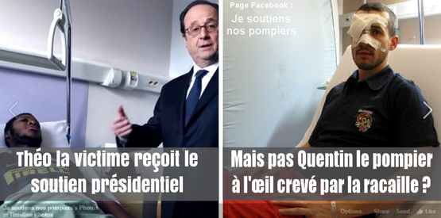

Un pompier aurait perdu un œil dans des affrontements avec des jeunes de banlieue
28.02.2017
Tags : "pompier blessé", "émeutes", "affaire Théo"

L'interview de Quentin, le pompier grièvement blessé à l'oeil à Grenoble
[francetvinfo.fr] [07.01.2014]
Il a été grièvement blessé le 27 décembre dernier, au cours de la manifestation devant la Préfecture de l'Isère. Ce jour-là, pompiers et CRS s'étaient violemment affrontés. Quentin avait reçu un tir de flash ball dans l'oeil. Aujourd'hui il porte plainte et doit rencontrer la police des polices.
Quentin Charron est sorti de l'hôpital vendredi, après huit jours et une opération difficile. En dépit d'une intervention de quatre heures, il a perdu son oeil. "Le verdict est clair, mon oeil est fichu. Même s'il y a une récupération de un dixième, avec un dixième on n'y voit rien " a expliqué le pompier lors de son entretien avec France 3 Alpes. "Mon avenir chez les pompiers, ce qui me tient à coeur au quotidien, est très certainement fichu". "Travailler pendant 30 ans de façon sédentaire dans des bureaux, sans monter dans les camions, ça va être très difficile pour moi"...
Le jeune homme raconte cette journée du 27 décembre devant la préfecture de l'Isère. "On était en pleine guérilla urbaine", a-t-il expliqué, visiblement encore choqué. "Ca pétait dans tous les sens", "j'observais pour voir ce qu'il se passait, je me suis rapidement dit que c'était trop dangereux... "J'ai voulu repartir vers la place de Verdun, et c'est alors que j'ai reçu un choc d'une violence extrême. Je me suis mis à dégouliner du sang, il y en avait partout".
Quentin Charron n'a pas souhaité échanger avec sa hiérarchie. "Mes supérieurs veulent me rencontrer mais pas moi, c'est trop frais", explique-t-il, "je ne suis pas prêt à faire ce pas". Le pompier considère que sa hiérarchie a "sa part de responsabilité". "C'est pas eux bien sûr qui ont tiré le projectile qui m'a blessé" ajoute-t-il, "mais on est descendu dans la rue pour exprimer des idées..."
Le pompier de 31 ans a été entendu le matin par l'Inspection générale de la police nationale (IGPN) de Lyon. "Il s'agit d'abord d'en savoir plus sur le déroulement des faits, puis de déterminer une éventuelle responsabilité pénale, s'il y a eu faute", a indiqué Jean-Yves Coquillat, le procureur de la République de Grenoble.
"Sur l'origine de la blessure, il convient d'être très prudent", a ajouté le magistrat, qui a confié à l'IGPN de Lyon une enquête préliminaire, ouverte pour faire la lumière sur les circonstances du drame.
Vendredi 27 décembre, des incidents avaient éclaté entre les forces de l'ordre, CRS et gendarmes mobiles, et quelque 150 sapeurs pompiers isérois venus manifester devant la préfecture de l'Isère contre la réforme de leur temps de travail.
Touché à l'oeil par un projectile, le jeune pompier avait dû être hospitalisé, souffrant d'un traumatisme facial et d'une importante plaie oculaire. Selon un pompier, interrogé par l'AFP dans la foulée des incidents, les forces de l'ordre auraient d'abord fait usage de gaz lacrymogènes pour repousser des manifestants venus déplacer des barrières de sécurité.
Ils auraient ensuite riposté avec des tirs de flashball lorsque les pompiers ont actionné contre eux leur lance à incendie. Samedi 4 janvier, une marche de soutien en faveur du jeune pompier a réuni à Grenoble entre 2.000 et 3.000 personnes.
L’intox du pompier « à l’œil crevé par la racaille »
[lemonde.fr] [28.02.2017]
Un message largement partagé sur Facebook attire l’attention sur le sort d’un pompier blessé dans une manifestation. Avec une présentation erronée.
« Théo la victime reçoit le soutien présidentiel, mais pas Quentin, le pompier à l’œil crevé par la racaille ? » Un montage photo de la page Facebook « Je soutiens nos pompiers » a été partagé plus de 125 000 fois depuis sa publication, le 22 février. Mais contrairement à ce qu’il affirme, la photo utilisée ne montre pas un pompier blessé par une « racaille », mais par un policier lors d’une manifestation en 2013. Explications.
Sur le montage photo partagé sur Facebook, on peut lire que Quentin le pompier a eu « l’œil crevé par la racaille ».
Le texte du message a été modifié plusieurs fois depuis sa publication, mais la version initiale, visible en ligne du 22 au 25 février, n’apportait aucune précision sur l’origine de l’image (ni date, ni contexte, ni source des informations), comme on peut le voir en cliquant sur l’historique des modifications du message. Et c’est cette version qui a le plus circulé.
Cette présentation a également été véhiculée par d’autres messages du même type, eux aussi très partagés, notamment sur Twitter, comme ici par Olivier Collas, notamment cofondateur de l’Union républicaine (proche des Républicains).
Pourquoi c'est faux
Contrairement à ce qu’affirme le montage photo, le pompier, Quentin, n’a pas été blessé par une « racaille ». Il a été blessé lors d’affrontements entre sapeurs-pompiers et forces de l’ordre devant la préfecture de l’Isère, à Grenoble, en marge d’une manifestation, le 27 décembre 2013, comme le racontait à l’époque Le Dauphiné libéré.
Ce pompier de 31 ans (à l’époque) a été violemment touché au visage par un projectile et a été ensuite « opéré à plusieurs reprises, [souffrant] d’un éclatement du globe oculaire et de multiples fractures au nez, à l’orbite de l’œil et à l’arcade sourcilière. Mais son œil est définitivement perdu », écrivait Mediapart le 18 juin 2014.
Le pompier a porté plainte et l’enquête a été confiée à l’Inspection générale de la police nationale (IGPN). Selon le pompier, qui a visionné les images de vidéosurveillance avec les enquêteurs, il s’agissait d’un tir de lanceur de balles de défense (LBD 40). L’enquête a ensuite été classée sans suite par le procureur de la République de Grenoble pour « absence d’infraction ».
Selon Mediapart, le procureur, Jean-Yves Coquillat, a écrit à l’avocat du pompier que « l’enquête n’a pas permis précisément de déterminer l’origine des blessures qui ont pu être causées par un tir de lanceur de balles de défense ou une grenade de désencerclement, mais dans tous les cas les moyens employés par les forces de l’ordre étaient proportionnels aux agressions commises par les pompiers lors d’une manifestation violente ».
Contrairement à ce qu’affirmait la rumeur, il n’a donc jamais été question de blessures causées par une « racaille ». Le post Facebook de la page Je soutiens nos pompiers a été mis à jour depuis sa publication, ajoutant une phrase plus ambiguë sur l’origine des blessures, évoquant le fait que le pompier aurait été « éborgn [é] par une racaille de cité ou un policier racailleux ». Le tout sans supprimer le photomontage initial.
Non, «Quentin le pompier» n’a pas eu «l’œil crevé par la racaille»
[liberation.fr] [28.02.2017]
Une image virale publiée sur Facebook se désole que cet homme blessé n'ait pas reçu la visite de François Hollande. Mais contrairement à ce qu'affirmaient les administrateurs de la page, il a en fait été touché par le tir d'un policier lors d'une manifestation en 2013, à Grenoble.
INTOX. Avec plus de 125 000 partages et 10 000 mentions «J’aime», le post Facebook de la page «Je soutiens les pompiers» est devenu viral en quelques jours. Publié le 22 février, il comporte une photo de la visite de François Hollande auprès de Théo L., grièvement blessé lors de son interpellation par quatre policiers, à côté de celle d’un homme touché à l’œil. Les deux images sont barrées d’un texte : «Théo la victime reçoit le soutien présidentiel. Mais pas Quentin le pompier à l’œil crevé par la racaille ?» Une autre phrase accompagne le montage : «Quentin n’avait pas eu droit à la visite du président, lui… peut-être aurait-il dû agresser des flics pour se faire chouchouter ?» En dessous du post, des centaines de commentaires haineux, visant pêle-mêle François Hollande, le gouvernement et les médias.
DÉSINTOX. Le Quentin de la photo s’appelle bien Quentin, et il est bien pompier. Mais son histoire n’a rien à voir avec celle d’un «pompier à l’œil crevé par la racaille». En effet, comme le racontait à l’époque le Dauphiné, Quentin Charron a été blessé fin 2013 à Grenoble «lors d’affrontements qui avaient éclaté entre les sapeurs-pompiers et les forces de l’ordre devant la préfecture de l’Isère en marge d’une manifestation des soldats du feu». Mediapart précise de son côté que le jeune homme a été «atteint par un tir policier» lors de la manifestation, sans qu’on puisse connaître l’identité du tireur puisque «l’enquête a été classée sans suite par le procureur de la République de Grenoble, pour "absence d’infraction"».
Sans doute interpellé sur les véritables faits, les administrateurs de la page Facebook «Je soutiens nos pompiers» ont modifié le post le 25 février, soit trois jours après publication (comme en atteste l’historique de modification de Facebook). Aucun correctif, mais plusieurs paragraphes de texte ont été ajoutés, dont ce passage tout en ambiguïté (et en racisme assumé) : «Quand c’est un blanc qui se fait éborgner par une racaille de cité ou un policier racailleux, tout le monde s’en fout, tout le monde l’oublie ! Quand un immigré congoïde (d’une famille qui détourne 670 000 euros de nos impôts) se fait blesser lorsqu’il agresse des policiers, on doit en faire une affaire d’Etat ? Sérieusement…» Quelques minutes plus tard, le mot «blanc» est remplacé par «autochtone». Pour les producteurs d’intox aussi, les détails comptent.
ARTICLES INTERNET
03.01.2014
27 décembre 2013 à Grenoble : un pompier perd un œil suite à un tir de flashball policier
[27novembre2007.blogspot.be]
07.01.2014
L'interview de Quentin, le pompier grièvement blessé à l'oeil à Grenoble
[francetvinfo.fr]
20.01.2014
La mère d'un pompier blessé à un oeil réclame « la vérité » à Manuel Valls
[leparisien.fr]
28.02.2017
L’intox du pompier « à l’œil crevé par la racaille »
[lemonde.fr]
Non, « Quentin le pompier » n’a pas eu « l’œil crevé par la racaille »
[liberation.fr]
Un pompier s’est-il fait crever un œil par “une racaille” ?
[crosscheck.firstdraftnews.com]
L’intox du pompier « à l’œil crevé par la racaille »
[politiveille.fr]
Beaucoup de gens partagent cette photo d'un pompier faussement agressé «par la racaille»
[buzzfeed.com]
L’intox du pompier « à l’œil crevé par la racaille »
[wn.com]
L’intox du pompier « à l’œil crevé par la racaille »
[actualites.buzz]
Faux ! "Quentin le pompier" ne c'est pas fait "crevé" l'œil " par la racaille"
[venissieux-minguettes.fr]
02.03.2017
Non, "Quentin le pompier" n'a pas été éborgné "par la racaille"
[lamontagne.fr]
[Intox] Quentin le pompier n’a pas eu l’œil crevé par la « racaille »
[alnas.fr]
03.03.2017
Non, un pompier de Grenoble ne s’est pas fait crever un œil par une « racaille »
[rue89lyon.fr]
06.03.2017
Quand des pages Facebook d'extrême-droite diffusent des intox en série
[levif.be]
07.03.2017
Les intox des pages Facebook de l'extrême droite
[7sur7.be]
12.03.2017
Non, Quentin le pompier n’a pas eu «l’œil crevé par la racaille»
[hoax-net.be]
POSTS FACEBOOK
Danièle Nunc
26 mars
Très bon site anti-intox : hoax-net.be
Mais + c'est gros + ça passe...
Non, Quentin le pompier n’a pas eu «l’œil crevé par la racaille»
Une image virale publiée sur Facebook se désole que cet homme blessé n’ait pas reçu la visite de François Hollande. Ce qui est bien entendu totalement erroné.…
hoax-net.be
Le Monde
28 février
Contrairement à ce qu'affirme un message largement partagé sur Facebook, le pompier blessé lors d'une manifestation en 2013 ne l'a pas été par une « racaille », mais par un policier. Explications et contexte sur Les Décodeurs.
Attention à l'intox du pompier « à l’œil crevé par la racaille »
lemonde.fr
4000 j'aime 160 commentaires 3200 partages
Les Décodeurs
28 février
Un message largement partagé sur Facebook attire l’attention sur le sort d’un pompier blessé dans une manifestation. Avec une présentation erronée.
L’intox du pompier « à l’œil crevé par la racaille »
Un message largement partagé sur Facebook attire l’attention sur le sort d’un pompier blessé dans une manifestation. Avec une présentation erronée.
lemonde.fr
369 j'aime 15 commentaires 287 partages
Libération
28 février
...mais par un policier.
Non, «Quentin le pompier» n’a pas eu «l’œil crevé par la racaille»
liberation.fr
2600 j'aime 140 commentaires 2700 partages
Désintox - Arte - Libération
28 février
Entre racisme et intox, ce post Facebook a été partagé plus de 120 000 fois...
Non, «Quentin le pompier» n’a pas eu «l’œil crevé par la racaille»
Une image virale publiée sur Facebook se désole que cet homme blessé n'ait pas reçu la visite de François Hollande. Mais contrairement qu'affirmaient les…
liberation.fr
685 j'aime 26 commentaires 622 partages
Xavier Buquet
28 février
Flipboard
Donc avant de partager, vérifiez au lieu de vous faire manipuler 😉
Non, «Quentin le pompier» n’a pas eu «l’œil crevé par la racaille
Cet ado, très intéressé par la politique, a sauvé une enfant dans une voiture en feu lors de la manif pour Théo. Sans se la raconter.La famille d’Awat Hassan, figure de proue des manifestations au …
flip.it
1 commentaire
Parti des Indigènes de la République
28 février
« Théo la victime reçoit le soutien présidentiel, mais pas Quentin, le pompier à l’œil crevé par la racaille ? » Un montage photo de la page Facebook « Je soutiens nos pompiers » a été partagé plus de 125 000 fois depuis sa publication, le 22 février. Mais contrairement à ce qu’il affirme, la photo utilisée ne montre pas un pompier blessé par une « racaille », mais par un policier lors d’une manifestation en 2013. Explications.
L’intox du pompier « à l’œil crevé par la racaille »
Un message largement partagé sur Facebook attire l’attention sur le sort d’un pompier blessé dans une manifestation. Avec une présentation erronée.
lemonde.fr
30 j'aime 34 partages
Latifa Chlihi
28 février
Ce fake made in fachosphère n'a que trop tourné ! Merci de contribuer à diffuser le démenti.
Attention à l'intox du pompier « à l’œil crevé par la racaille »
lemonde.fr
4 j'aime 1 commentaire
Emma Gabrelle
28 février
Ba alors les gars on partage plus?? Bizarre..... Pourtant cest toujours la racaille qui a agit.....
Non, «Quentin le pompier» n’a pas eu «l’œil crevé par la racaille»
liberation.fr
34 j'aime 1 partage
Association Visa
28 février
Une intox de plus ...
L’intox du pompier « à l’œil crevé par la racaille »
Un message largement partagé sur Facebook attire l’attention sur le sort d’un pompier blessé dans une manifestation. Avec une présentation erronée.
lemonde.fr
14 j'aime 2 commentaires 130 partages
Phanat Pak
28 février
Méfiez-vous des connards qui détournent les faits. Ils ne valent pas mieux que Trump.
http://www.lemonde.fr/…/l-intox-du-pompier-a-l-il-creve-par…
L’intox du pompier « à l’œil crevé par la racaille »
Un message largement partagé sur Facebook attire l’attention sur le sort d’un pompier blessé dans une manifestation. Avec une présentation erronée.
lemonde.fr
12 j'aime 4 commentaires 1 partage
Théo Giacometti
28 février
Si seulement on prenait tous un peu le temps de vérifier les choses avant de les hurler partout... Dure période pour l'information.
Non, «Quentin le pompier» n’a pas eu «l’œil crevé par la racaille»
Une image virale publiée sur Facebook se désole que cet homme blessé n'ait pas reçu la visite de François Hollande. Mais contrairement qu'affirmaient les…
liberation.fr
17 j'aime 3 commentaires 1 partage
Interdisons le Flash-Ball
28 février
La fausse info dont on vous parlez il y a quelques jours, lorsque des militants d'extrême droite utilisaient la détresse d'un pompier éborgné par ... le flashball d'un CRS ..
Non, «Quentin le pompier» n’a pas eu «l’œil crevé par la racaille»
Une image virale publiée sur Facebook se désole que cet homme blessé n'ait pas reçu la visite de François Hollande. Mais contrairement à ce qu'affirmaient les…
liberation.fr
16 j'aime 1 commentaire 18 partages
Yamina Mah
28 février
Les mensonges propagandistes, promoteurs de la division haineuse, n'en sont pas à leur premier coup d'essai, espérons que la vérité aille plus vite que le mensonge :
"Le Quentin de la photo s’appelle bien Quentin, et il est bien pompier. Mais son histoire n’a rien à voir avec celle d’un «pompier à l’œil crevé par la racaille». En effet, comme le racontait à l’époque le Dauphiné, Quentin Charron a été blessé fin 2013 à Grenoble «lors d’affrontements qui avaient éclaté entre les sapeurs-pompiers et les forces de l’ordre devant la préfecture de l’Isère en marge d’une manifestation des soldats du feu»."
Non, «Quentin le pompier» n’a pas eu «l’œil crevé par la racaille»
liberation.fr
19 j'aime 6 commentaires 1 partage
Ninie Swing
28 février
DÉSINTOX. Le Quentin de la photo s’appelle bien Quentin, et il est bien pompier. Mais son histoire n’a rien à voir avec celle d’un «pompier à l’œil crevé par la racaille».
Quentin Charron a été blessé fin 2013 à Grenoble «lors d’affrontements qui avaient éclaté entre les sapeurs-pompiers et les forces de l’ordre devant la préfecture de l’Isère en marge d’une manifestation des soldats du feu».
Mediapart précise de son côté que le jeune homme a été «atteint par un tir policier» lors de la manifestation, sans qu’on puisse connaître l’identité du tireur puisque «l’enquête a été classée sans suite par le procureur de la République de Grenoble, pour "absence d’infraction"».
Non, «Quentin le pompier» n’a pas eu «l’œil crevé par la racaille»
Une image virale publiée sur Facebook se désole que cet homme blessé n'ait pas reçu la visite de François Hollande. Mais contrairement qu'affirmaient les…
liberation.fr
12 j'aime 19 partages
Arnaud Lecroq
28 février
Arrêtez d'être cons et vérifiez les informations avant de les partager...
Non, «Quentin le pompier» n’a pas eu «l’œil crevé par la racaille»
Une image virale publiée sur Facebook se désole que cet homme blessé n'ait pas reçu la visite de François Hollande. Mais contrairement à ce qu'affirmaient les…
liberation.fr
14 j'aime 1 commentaire
Fabrice Brutus
28 février
On assiste à une augmentation des fakes en cette période pré-électorale. Certains partis passent leur temps à en créer pour indigner la population et pousser aux votes extrêmes.
NE TOMBEZ PAS DANS LE PANNEAU !!!! Cessez de vous faire manipuler comme des moutons !
Merci
L’intox du pompier « à l’œil crevé par la racaille »
lemonde.fr
29 j'aime 1 commentaire 3 partages
Kouider Benfreha
28 février
Un bel exemple de la dérive 2.0! Faites le et dites le autour de vous : vérifiez les sources des informations qui circulent sur les réseaux sociaux. Facebook est une poubelle de fausses informations! Surtout vous les plus jeunes, ne vous emballez pas dans des commentaires, des conflits et des provocations. Beaucoup d'articles sont là uniquement pour créer de la division. Voilà tout! 😊 bonne fin de journée 😉
Non, «Quentin le pompier» n’a pas eu «l’œil crevé par la racaille»
liberation.fr
6 j'aime 2 commentaires
May Donny
28 février Paris, Ile-de-France, France
Au fait, pour ceux qui s'indignent que le pompier blessé à l'œil n'ait pas reçu le même soutien que Théo : c'est une #fakenews
L’intox du pompier « à l’œil crevé par la racaille »
Un message largement partagé sur Facebook attire l’attention sur le sort d’un pompier blessé dans une manifestation. Avec une présentation erronée.
s
mobile.lemonde.fr
3 j'aime
Nico L'RevHanchard
28 février
C'est un flic qui a blessé le pompier au fait..
Mais bon, ça fait toujours plaisir aux frustrés qui ont peur de tout ce qui n'est pas blanc
Non, «Quentin le pompier» n’a pas eu «l’œil crevé par la racaille»
liberation.fr
7 j'aime
Jean Francois Bigeard
28 février
Ah l'extrême droite... Ils sont forts.
Ce sont les rois de l'information.
Et vous croyez encore en leurs promesses ?
L’intox du pompier « à l’œil crevé par la racaille »
Un message largement partagé sur Facebook attire l’attention sur le sort d’un pompier blessé dans une manifestation. Avec une présentation erronée.
lemonde.fr
2 j'aime
Mehdi Bouteghmès
28 février
DÉSINTOX. Le Quentin de la photo s’appelle bien Quentin, et il est bien pompier. Mais son histoire n’a rien à voir avec celle d’un «pompier à l’œil crevé par la racaille». En effet, comme le racontait à l’époque le Dauphiné, Quentin Charron a été blessé fin 2013 à Grenoble «lors d’affrontements qui avaient éclaté entre les sapeurs-pompiers et les forces de l’ordre devant la préfecture de l’Isère en marge d’une manifestation des soldats du feu». Mediapart précise de son côté que le jeune homme a été «atteint par un tir policier» lors de la manifestation, sans qu’on puisse connaître l’identité du tireur puisque «l’enquête a été classée sans suite par le procureur de la République de Grenoble, pour "absence d’infraction"».
Non, «Quentin le pompier» n’a pas eu «l’œil crevé par la racaille»
Une image virale publiée sur Facebook se désole que cet homme blessé n'ait pas reçu la visite de François Hollande. Mais contrairement à ce qu'affirmaient les…
liberation.fr
26 j'aime 1 commentaire 36 partages
Pascal Haquette
28 février
juste pour rire un peu ...
Non, «Quentin le pompier» n’a pas eu «l’œil crevé par la racaille»
Une image virale publiée sur Facebook se désole que cet homme blessé n'ait pas reçu la visite de François Hollande. Mais contrairement à ce qu'affirmaient les…
liberation.fr
3 j'aime
Ateliers Locks
28 février
Alors voilà les amis,
sur les réseaux sociaux circulent énormément de fausses informations! Certains en créés intentionnellement pour se rendre crédible dans leur quête diabolique de stigmatisation d'autrui!
Et oui la désinformation est aussi une technique de communication!
👀👀👀👀👀👀
Ne vous laissez pas séduire!! Ces gens là n'ont aucune morale! ... Afficher la suite
Non, «Quentin le pompier» n’a pas eu «l’œil crevé par la racaille»
Une image virale publiée sur Facebook se désole que cet homme blessé n'ait pas reçu la visite de François Hollande. Mais contrairement à ce qu'affirmaient les…
liberation.fr
13 j'aime 11 partages
Marty Jones Purple
1 mars
Salops de pompiers bien blancs qui respectent pas la police !
Non, «Quentin le pompier» n’a pas eu «l’œil crevé par la racaille»
Une image virale publiée sur Facebook se désole que cet homme blessé n'ait pas reçu la visite de François Hollande. Mais contrairement à ce qu'affirmaient les…
liberation.fr
7 j'aime 4 commentaires
Michel Rostain
28 février
LeMonde.fr
Excellente initiative des médias contre les fake news
L’intox du pompier « à l’œil crevé par la racaille »
Un message largement partagé sur Facebook attire l’attention sur le sort d’un pompier blessé dans une manifestation. Avec une présentation erronée.
lemonde.fr
5 j'aime 3 partages
Pouick Ou
1 mars
Ne vous laissez pasz avoir.ca pourrai avoir des consecence tres grave sur votre choix aux élections .
Attention à l'intox du pompier « à l’œil crevé par la racaille »
lemonde.fr
7 j'aime 1 commentaire 3 partages
Keke Patta Folla
1 mars
Haha les moutons continuez à partagez de la merde
Justice pour Theo casti et tous les autres
L’intox du pompier « à l’œil crevé par la racaille »
Un message largement partagé sur Facebook attire l’attention sur le sort d’un pompier blessé dans une manifestation. Avec une présentation erronée.
lemonde.fr
17 j'aime
RADIO CROCO
1 mars
La racaille qui a mutilé ce pompier c'est la police nazionale...
"Le pompier a porté plainte et l’enquête a été confiée à l’Inspection générale de la police nationale (IGPN). Selon le pompier, qui a visionné les images de vidéosurveillance avec les enquêteurs, il s’agissait d’un tir de lanceur de balles de défense (LBD 40). L’enquête a ensuite été classée sans suite par le procureur de la République de Grenoble pour « absence d’infraction »..."
En savoir plus sur http://www.lemonde.fr/…/l-intox-du-pompier-a-l-il-creve-par…
L’intox du pompier « à l’œil crevé par la racaille »
Un message largement partagé sur Facebook attire l’attention sur le sort d’un pompier blessé dans une manifestation. Avec une présentation erronée.
lemonde.fr
11 j'aime 3 partages
Syd-ney Gre-koff a partagé la publication de Erwan Lango.
1 mars
juste pour info les amis. à un moment, vérifiez vos sources avant de poster n'importe quoi ! la jeunesse identitaire du FN est très forte pour transformer la vérité !!
Erwan Lango
2 mars
http://www.liberation.fr/…/non-quentin-le-pompier-n-a-pas-e…
Non, «Quentin le pompier» n’a pas eu «l’œil crevé par la racaille»
Une image virale publiée sur Facebook se désole que cet homme blessé n'ait pas reçu la visite de François Hollande. Mais contrairement à ce…
liberation.fr
3 j'aime
Solidaires Isère
2 mars
comment l'extrême-droite ment et instrumentalise Quentin, pompier victime de la violence et de la répression policière à Grenoble...
Soutien à Quentin, pompier blessé lors des manifestations
On oublie pas les agent-e-s des SDIS en lutte pour de véritables moyens matériels et humains pour assurer leur mission de service public !
L’intox du pompier « à l’œil crevé par la racaille »
Un message largement partagé sur Facebook attire l’attention sur le sort d’un pompier blessé dans une manifestation. Avec une présentation erronée.
lemonde.fr
12 j'aime 2 partages
Cgt Sdis Isère a partagé la vidéo de Désintox - Arte - Libération.
10 mars
Pour notre camarade. Et qu'on lui foute la paix.
Désintox - Arte - Libération
7 mars
Non, "Quentin le pompier" n’a pas eu "l’œil crevé par la racaille". Une intox virale à regarder ici et maintenant.
4 j'aime
Christian Monnet
2 avril
L’intox du pompier « à l’œil crevé par la racaille »
Un montage photo de la page Facebook Je soutiens nos pompiers (15 000 abonnés) partagé plus de 125 000 fois depuis sa publication, le 22 février, affirme qu’un pompier aurait eu « l’œil crevé par la racaille » :
Le sapeur-pompier Quentin a été blessé en décembre 2013, lors d’une manifestation à Grenoble, où il a reçu un projectile tiré par un policier et non une « racaille ».
POURQUOI C’EST FAUX
Contrairement à ce qu’affirme le montage photo, le pompier, Quentin, n’a pas été blessé par une « racaille ». Il a été blessé lors d’affrontements entre sapeurs-pompiers et forces de l’ordre devant la préfecture de l’Isère, à Grenoble, en marge d’une manifestation, le 27 décembre 2013, comme le racontait à l’époque Le Dauphiné libéré. Comme l’a confirmé Mediapart par la suite, ses blessures ont été causées par un tir de projectile venant d’un policier.
Lire aussi : L’intox du pompier « à l’œil crevé par la racaille »
7 j'aime 2 commentaires